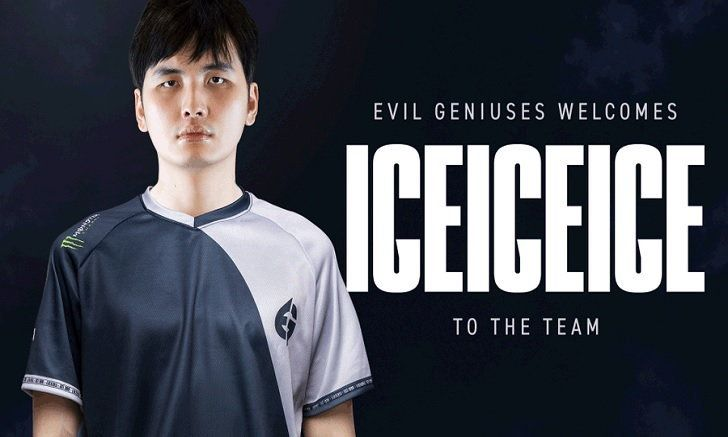

เอาแล้วไง! iceiceice ผู้เล่น DOTA 2 ย้ายไป EG

หลังจากที่มรสุมลงทีม Fnatic iceiceice ผู้เล่นออฟเลนได้ตัดสินใจออกจากทีมดังกล่าว นอกจากนี้ ผู้เล่นคนไทยตัวเก่งอย่าง Jabz และ 23savage ก็ได้ตามออกไปกันอีกด้วย (แต่ Jabz กลับเข้ามาทีม Fnatic ภายหลัง) ส่วน 23savage ก็ถูกดึงตัวไปเล่นกับทีมจีนคือ Vici Gaming
ทีม Fnatic ถือเป็นหนึ่งในทีมที่คนไทยเชียร์มากที่สุด เพราะมีผู้เล่นคนไทยและ iceiceice ทีม Fnatic ชุดล่าสุดที่มี iceiceice คือ
Marc Polo "Raven" Luis Fausto (ฟิลิปปินส์)
Kam Boon "Moon" Seng (มาเลเซีย)
Daryl Koh "iceiceice" Pei Xiang (สิงคโปร์)br
Djardel "DJ" Mampusti (ฟิลิปปินส์)
Nico "eyyou" Barcelon (ฟิลิปปินส์)
หลังจากที่สมาชิกทีม Fnatic เดิม ได้ทีมกันหมดแล้ว เหลือแต่ iceiceice ทำให้แฟนๆหลายคนสงสัยว่าจะย้ายไปทีมใด และต่างสันนิษฐานว่าทีมนั้นต้องเป็นทีมจีนหรือทีมในเอเชียตะวันออกเฉียงใต้แน่ๆ เพราะ iceiceice แต่งงานและมีลูกสาวแล้ว การที่จะไปเล่นให้กับทีมยุโรป หรือฝั่งอเมริกา นอกจากจะอยู่ไกลกันแล้ว เวลาของทั้งสองทวีปยังต่างกันมากอีกด้วย
แต่ล่าสุดก็เป็นเรื่องเซอร์ไพรส์ เพราะทีม EG ได้ออกมา Tweet ข้อความผ่านทางช่อง Twitter อย่างเป็นทางการของตนเองว่า
"Our #Dota team just got a whole lot cooler as we welcome @iceiceicedota to the #LIVEEVIL family. #EGWIN"
ถือเป็น Tweet ที่ต้อนรับ iceiceice อย่างเป็นทางการ พร้อมกับแนบรูป iceiceice ใส่เสื้อ EG ส่วนเจ้าตัวเองก็ Retweet ด้วยข้อความสั้นๆว่า Hello!